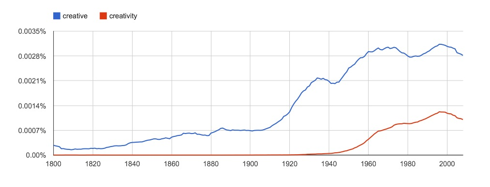

Do Not Stifle
CREATIVITY
Historical Data
On May 9, 2019, TIME magazine published that most Americans value creativity in oter people, but it wasn't til the twentieth century that books published the words creative and creativity more often.

One way to read the chart is that creativity is just more important to us now. That brought up the question of whether we always had the ability to be creative.
Creativity is connected to entrepreneurialism and innovation.
Creativity is a mental function.
Ray Haberski suggested "to map the flow of ideas between the psychology liturature..."
I am Adiba Rana. My school email is adiba_rana@student.davincischools.org